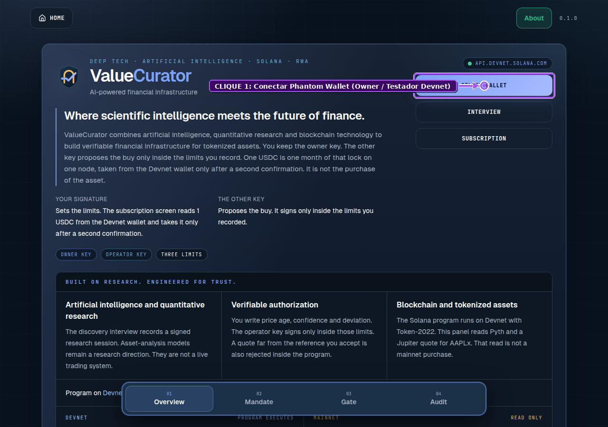

🏛️ ValueCurator × Compilatorum — Pitch Deck Institucional Completo (Edição Expandida v2.0)
Governança Soberana de Capital, Armadura Neuro-Simbólica para Agentes de IA, Emissão Soberana SPL Token-2022 & Liquidação Determinística E2E na Solana
Track: Autonomous Software & AI / Agent Control Plane / Sovereign DeFi & DeSci Infrastructure
Founding Team: Sandra Pereira (Core Solana Systems Engineering) & João Nitsche (Epistemic Systems & Quantamental Architecture)
Repositórios:smp-sandramariapereira/valuecurator(branch: feat/devnet-e2e-tokenization-protocol) •compilatorum/vc
On-Chain Program ID (Devnet):6owAcXQjGg6d5p1n2D5gK8mKkG9uH9sE1kL2mP3rMiW5
Mint Experimental Token-2022 (R-NFT-ONS-001):EAP343292JM934s6B3C736cT2U2tA357tC4J7gX3nN8x
🗺️ Índice Executivo Master (16 Slides + Formalismo Epistêmico)
| Slide | Título Executivo | Módulo / Pilar |
|---|---|---|
| Slide 00 | Filosofemas Fundamentais & Álgebra Fiduciária Expandida ($\mathcal{VC}_{\text{v2}}$) | Fundamentos Epistêmicos |
| Slide 01 | Capa Institucional & Tese Soberana: Custódia de Segunda Ordem na Solana | Visão & Posicionamento |
| Slide 02 | O Problema Duplo: A Armadilha da Chave Crua & O Gargalo Split-Cluster | Diagnóstico de Risco |
| Slide 03 | A Gênese do "ValueCurator": Meta-Curadoria de Ativos Exógenos e Endógenos | Cibernética de 2ª Ordem |
| Slide 04 | Arquitetura Neuro-Simbólica & Os 6 Invariantes Determinísticos ($\bigwedge_{k=1}^6 \mathcal{C}_k$) | Portão Fail-Closed |
| Slide 05 | Novo Motor Dual-Mode: APPROVAL_ONLY $\oplus$ DEVNET_E2E (Ponta-a-Ponta) |
Nova Feature v2.0 |
| Slide 06 | Fábrica Soberana de Ativos Próprios (SPL Token-2022 + EidosManifest v1.0) |
Nova Feature v2.0 |
| Slide 07 | Matemática do Swap Determinístico Protegido (execute_devnet_strategy_swap) |
Nova Feature v2.0 |
| Slide 08 | Sistema Circulatório: Treasury PDA & metabolize_yield (Split 85% / 15%) |
Economia Regenerativa |
| Slide 09 | IA Quantamental & Econofísica PIML em Graph Neural Networks (GNNs) | Deep Tech & Oráculos |
| Slide 10 | Oportunidade de Mercado Multilateral B2X + DeSci ($4,8T+ TAM) | Mercado & Verticais |
| Slide 11 | Modelo de Negócios Tri-Engine & Unit Economics (SaaS + Yield + Royalties IP) | Monetização & LTV/CAC |
| Slide 12 | Design do Protocolo Experimental: Carteira Owner vs. Carteira Cliente Testador | Metodologia Científica |
| Slide 13 | Prova Visual E2E (Parte 1: EXP-01 a EXP-06 — Mandato & Defesa Fail-Closed) |
Evidência Playwright |
| Slide 14 | Prova Visual E2E (Parte 2: EXP-07 a EXP-12 — Swap, Yield 85/15 & Solscan) |
Evidência Playwright |
| Slide 15 | Panorama Competitivo & Raio-X Full-Stack (feat/devnet-e2e-tokenization-protocol) |
Engenharia & Moat |
| Slide 16 | Equipe Fundadora, Roadmap 2026 & The Ask ($250K Colosseum Accelerator) | Investimento & Fechamento |
🧬 §0. Filosofemas Fundamentais & Álgebra Fiduciária Expandida ($\mathcal{VC}_{\text{v2}}$)
- 🜁 1. Filosofema da Soberania sobre o Capital (Sovereignty vs. Agency):
«Autonomia operacional não implica soberania sobre o capital. Modelos probabilísticos são extraordinários em encontrar padrões latentes em tensores de mercado, mas são ontologicamente incapazes de honrar deveres fiduciários. A inteligência propõe; a evidência matemática comprova; a política determinística autoriza; o proprietário governa a custódia.»
- 🜂 2. Filosofema da Ausência de Ruína (Absence of Existential Ruin):
«No mercado financeiro, a probabilidade de falência de um operador probabilístico desprovido de invariantes aproxima-se de 1 no infinito: $\lim_{t \to \infty} \mathbb{P}_{\text{ruin}}(t) = 1$. O ValueCurator garante que nenhum cisne negro oracular ou alucinação neural drene o principal além do mandato constitucional.»
- 🜃 3. Filosofema da Meta-Curadoria (Second-Order Cybernetics):
«O investidor humano soberano não compete em microssegundos contra autômatos estocásticos: ele governa as regras constitucionais do sistema que governa o seu capital.»
- 🜄 4. Filosofema do Ciclo Produtivo Epistêmico (Work → Asset → Capital → More Work):
«O conhecimento científico e o código não devem permanecer como artefatos passivos fora do balanço. Através do manifesto criptográfico
EidosManifest v1.0e da cunhagem soberana viaSPL Token-2022, cada constructo intelectual torna-se um ativo governado que gera liquidez e retroalimenta a Tesouraria de Pesquisa.»
🔣 Álgebra Fiduciária Expandida de Sete Componentes ($\mathcal{VC}_{\text{v2}}$)
🎴 Slide 01 — Capa Institucional & Tese Soberana: Custódia de Segunda Ordem na Solana
📌 Identificação Executiva
- Projeto: ValueCurator × Compilatorum
- Subtítulo: Governança Soberana de Capital, Armadura Neuro-Simbólica para IA & Fábrica de Ativos Programáticos (
SPL Token-2022) na Solana - Tese Financeira em 35 Palavras:
"O ValueCurator transforma capital on-chain vulnerável e propriedade intelectual científica em cofres matematicamente governados: agentes de IA propõem estratégias, mas nenhum centavo ou token se move sem prova oracular Pyth em tempo real e validação determinística na Solana."
🧒 Explicação ELI5 (Como se eu tivesse 5 anos)
🧸 Imagine um carro autônomo superveloz (a IA) dirigindo o seu cofre de moedas e de invenções científicas: Em vez de deixar o robô dirigir sem freios perto de um penhasco, o ValueCurator constrói muros de proteção físicos na pista (o Smart Contract na Solana). O robô sugere o caminho, o fiscal matemático confere o mapa ao vivo e, se for 100% seguro, o cofre executa a troca ou cria a figurinha oficial da sua invenção (
Token-2022) diretamente na sua carteira!
📊 Destaques de Tração e Engenharia Verificável
| Dimensão | Status Auditável | Artefato / Prova On-Chain |
|---|---|---|
| Smart Contract Anchor (Rust) | Implantado na Solana Devnet (+2 novas instruções v2.0) | 6owAcX...MiW5 |
| Telemetria Oracular | Leitura em tempo real na Solana Mainnet | Pyth Network Feed 922 ($\sigma_{\text{conf}} \le 1000\text{ bps}$) |
Fábrica SPL Token-2022 |
Mintagem atômica via Vault PDA + EidosManifest v1.0 |
Mint EAP343...3nN8x |
| Modo de Execução Dual | APPROVAL_ONLY $\oplus$ DEVNET_E2E no Agente KAIROS e UI |
execute-devnet.ts + execution-proposal-card.tsx |
| Suíte E2E Playwright | 100% de aprovação (24 testes base + 12 passos experimentais) | Capturas anotadas EXP-01 a EXP-12 + JSON Report |
🎙️ Roteiro do Apresentador (Pitcher Script — 0:00 a 0:25)
"Investidores e avaliadores: estamos entrando na era dos agentes autônomos de IA operando mercados financeiros on-chain. Mas entregar chaves privadas cruas para modelos neurais probabilísticos é uma receita para falência catastrófica. Nós construímos o ValueCurator para estabelecer a governança soberana de segunda ordem na Solana — e, nesta versão 2.0, expandimos o protocolo para além de ativos de terceiros: agora o ValueCurator funciona de ponta-a-ponta na Devnet, cunhando nossos próprios artefatos científicos em SPL Token-2022 e liquidando swaps determinísticos com divisão automática de rendimentos."
🎴 Slide 02 — O Problema Duplo: A Armadilha da Chave Crua & O Gargalo Split-Cluster
🚨 Problema 1: Agentes Probabilísticos com Chaves Privadas Cruas (Existential Ruin)
- 💥 Vetor de Alucinação: LLMs e redes neurais são reconhecedores estatísticos de padrões. Quando a liquidez seca ou um oráculo atrasa, bots sem freios determinísticos executam ordens irracionais e drenam cofres em milissegundos.
- 💥 Ineficácia das Proteções Atuais:
- Multi-sigs (Squads): Exigem aprovação humana manual para cada transação — inviáveis para execução algorítmica rápida.
- Prompts de Sistema: LLMs ignoram instruções em linguagem natural sob ruído adversarial.
🚨 Problema 2: A Assimetria Split-Cluster e a Limitação de Ativo Único
- 🧱 O Dilema Mainnet vs. Devnet: Na arquitetura original, o sistema lia preços reais na Mainnet (Pyth 922 + Jupiter), mas na Devnet as pools da Jupiter para ativos reais (
AAPLx) não possuem liquidez contínua, parando no reciboAPPROVAL_ONLY. - 🧱 Invisibilidade de Ativos Próprios: Pesquisadores, laboratórios de IA e DAOs produzem ativos valiosos (Research NFTs, Glyphs, Pesos de Modelos, Constructos), mas não tinham como emiti-los nativamente sob o mesmo mandato criptográfico do cofre.
(LLM / Rede Neural)"] -->|Detém Chave Privada Crua| KEY["🔑 Private Key Exposta
(Poder Total de Assinatura)"] KEY -->|Alucinação / Flash Crash| RUIN["💥 Ruína Existencial
(Cofre Drenado Irreversivelmente)"] end subgraph P2["⚠️ FALHA 2: GARGALO SPLIT-CLUSTER & ILÍQUIDEZ DE IP"] MAIN["🌐 Mainnet: Pyth 922 + Jupiter
(Telemetria Real)"] -->|Sem Pool Equivalente na Devnet| STOP["🛑 Parada em APPROVAL_ONLY
(Sem Liquidação Física no Cofre)"] IP["🧪 Artefatos Próprios (IP / IA)
(Research NFTs, Glyphs)"] -->|Fora da Custódia On-Chain| DEAD["📄 IP Ilíquida em PDFs/Repos
(Sem Royalties Programáticos)"] end subgraph SOL["✅ SOLUÇÃO VALUECURATOR v2.0 (DUAL-ENGINE SOBERANO)"] GATE["🛡️ Portão Determinístico (6 Invariantes)
+ Recibo Ed25519"] --> DUAL{"🔀 Seletor Dual-Mode"} DUAL -->|Emissão Soberana| MINT["🪙 Fábrica SPL Token-2022
(mint_research_asset via Vault PDA)"] DUAL -->|Liquidação E2E| SWAP["🔄 Swap Determinístico Devnet
(execute_devnet_strategy_swap)"] end style P1 fill:#450a0a,stroke:#f87171,stroke-width:2px,color:#fff style P2 fill:#78350f,stroke:#fbbf24,stroke-width:2px,color:#fff style SOL fill:#064e3b,stroke:#34d399,stroke-width:2px,color:#fff
🎙️ Roteiro do Apresentador (Pitcher Script — 0:25 a 0:50)
"Nós resolvemos dois problemas fundamentais de uma só vez. Primeiro: impedimos que agentes de IA tenham acesso à chave privada do cofre, eliminando o risco de ruína existencial. Segundo: superamos o gargalo clássico entre telemetria de Mainnet e liquidação na Devnet, criando uma fábrica soberana em SPL Token-2022 e um motor de swap determinístico que permite testar estratégias financeiras de ponta-a-ponta e tokenizar nossa própria propriedade intelectual."
🎴 Slide 03 — A Gênese do "ValueCurator": Meta-Curadoria de Ativos Exógenos e Endógenos
🧠 Cibernética de Segunda Ordem Aplicada ao Capital e à Ciência
- 🏛️ O Humano como Meta-Curador: Você não microgerencia ordens de milissegundos; você cura as regras constitucionais do sistema que cura o seu capital.
- 🌐 Expansão de Escopo — Dois Universos de Ativos sob um Único Cofre (
Vault PDA):- Ativos Exógenos (De Terceiros): RWAs e ações tokenizadas (
AAPLx,NVDAx), pareados comUSDCsob supervisão do Pyth Feed922. - Ativos Endógenos (Gerados pelo Próprio Ecossistema): Research NFTs (
R-NFT), Glifos Formais (GLYPH), Constructos de IA e Unidades de Royalties, cunhados diretamente peloVault PDA.
- Ativos Exógenos (De Terceiros): RWAs e ações tokenizadas (
(Meta-Curador Humano)"] -->|Define Mandato Constitucional| PDA["🏦 Vault PDA Soberano
Seed: ['node', owner_pubkey]"] subgraph Exogenous["🌍 ATIVOS EXÓGENOS (TERCEIROS)"] RWA["📈 RWAs & Equities Tokenizadas
(AAPLx, SOL, USDC)"] PYTH["📡 Oráculo Pyth Feed 922
(Preço & Confiança Mainnet)"] end subgraph Endogenous["🧬 ATIVOS ENDÓGENOS (GERADOS POR VOCÊ)"] RNFT["📜 Research NFTs (EidosManifest)
Ex: R-NFT-ONS-001"] GLYPH["🔣 Glifos & Constructos de IA
Ex: GLYPH-KAIROS-002"] end PDA -->|Governa Alocação & Slippage| Exogenous PDA -->|Atua como Mint Authority Exclusiva| Endogenous Exogenous -->|Gera Rendimento Líquido| METAB["⚗️ metabolize_yield (85% / 15%)"] Endogenous -->|Royalties MACHINE_PAYABLE| METAB METAB -->|15% Financia Nova Pesquisa| Endogenous style OWNER fill:#1e3a8a,stroke:#60a5fa,stroke-width:2px,color:#fff style PDA fill:#065f46,stroke:#34d399,stroke-width:2px,color:#fff style Exogenous fill:#0f172a,stroke:#38bdf8,stroke-width:2px,color:#fff style Endogenous fill:#4c1d95,stroke:#c084fc,stroke-width:2px,color:#fff style METAB fill:#b45309,stroke:#fbbf24,stroke-width:2px,color:#fff
🎙️ Roteiro do Apresentador (Pitcher Script — 0:50 a 1:15)
"Por que ValueCurator? Porque na era da IA autônoma o humano atua como Meta-Curador. E com nossa nova arquitetura, você não governa apenas ativos financeiros de terceiros como AAPLx ou USDC: o mesmo cofre PDA atua como autoridade soberana de emissão para os ativos intelectuais que você mesmo gera — fechando o ciclo 'Trabalho gera Ativo, Ativo gera Capital, Capital financia Mais Trabalho'."
🎴 Slide 04 — Arquitetura Neuro-Simbólica & Os 6 Invariantes Determinísticos ($\bigwedge_{k=1}^6 \mathcal{C}_k$)
⚙️ A Tríade Arquitetural: Neural + Simbólico + Blockchain
- Camada Neural (Propõe): Kernel KAIROS & Oráculos Quantamentais descobrem oportunidades de alocação e propõem intenções de trade/mint (
TradeIntent). - Portão Simbólico Determinístico (Comprova): Avalia 6 invariantes matemáticos rígidos antes de emitir o recibo criptográfico
Ed25519. Se qualquer invariante falhar, o sistema trava emFAIL_CLOSED. - Camada Solana Anchor PDA (Governa e Liquida): Isola a custódia do principal e executa apenas instruções autorizadas (
mint_research_asset,execute_devnet_strategy_swap,metabolize_yield,emergency_withdraw).
🛡️ As 6 Condições Necessárias e Suficientes ($\bigwedge_{k=1}^6 \mathcal{C}_k \equiv \mathbf{true}$)
| Invariante | Fórmula Matemática | Limite Constitucional | Ação em Caso de Violação |
|---|---|---|---|
| $\mathcal{C}_1$ — Whitelist de Ativos | $\text{Mint}_{\text{target}} \in \mathcal{A}_{\text{allow}}$ | Ex: AAPLx, USDC, R-NFT-ONS-001 |
⛔ FAIL_CLOSED (AssetNotAllowed) |
| $\mathcal{C}_2$ — Teto de Volume | $a_{\text{in}} \le \lambda_{\text{trade}}^{\max} \land \sum a_{\text{dia}} \le \lambda_{\text{daily}}^{\max}$ | Ex: $\le 250\text{ USDC}$ / trade | ⛔ FAIL_CLOSED (AllocationExceeded) |
| $\mathcal{C}_3$ — Frescor Oracular | $\Delta t = t_{\text{now}} - t_{\text{pyth}} \le \tau_{\text{age}}^{\max}$ | $\le 300\text{ segundos}$ | ⛔ FAIL_CLOSED (StaleOracleProof) |
| $\mathcal{C}_4$ — Confiança de Preço | $\frac{\sigma_{\text{pyth}}}{p_{\text{pyth}}} \times 10^4 \le \sigma_{\text{conf}}^{\max}$ | $\le 1.000\text{ bps}$ ($10\%$) | ⛔ FAIL_CLOSED (ConfidenceTooWide) |
| $\mathcal{C}_5$ — Desvio Cross-Venue | $\frac{|p_{\text{dex}} - p_{\text{pyth}}|}{p_{\text{pyth}}} \times 10^4 \le \Delta_{\text{dev}}^{\max}$ | $\le 2.000\text{ bps}$ ($20\%$) | ⛔ FAIL_CLOSED (OracleDexDivergence) |
| $\mathcal{C}_6$ — Impacto / Slippage | $\text{Impact}_{\text{bps}} \le \mathcal{S}_{\text{slip}}^{\max}$ | $\le 1.000\text{ bps}$ ($10\%$) | ⛔ FAIL_CLOSED (SlippageExceeded) |
🎙️ Roteiro do Apresentador (Pitcher Script — 1:15 a 1:40)
"Nossa armadura neuro-simbólica submete toda proposta da IA a seis invariantes matemáticos determinísticos: whitelist de ativos, teto por operação, frescor do oráculo Pyth, intervalo de confiança, desvio entre DEX e oráculo, e slippage máximo. Se todas as seis condições forem verdadeiras, geramos um recibo criptográfico Ed25519 de uso único. Se qualquer uma falhar, o portão trava em Fail-Closed antes mesmo de tocar na blockchain."
🎴 Slide 05 — Novo Motor Dual-Mode: APPROVAL_ONLY $\oplus$ DEVNET_E2E (Ponta-a-Ponta)
🔀 Alternância Transparente em 1 Clique (UI + Agente KAIROS + Smart Contract)
- Implementamos no agente (
execution-proposal.ts,approval-receipt.ts,execute-devnet.ts) e no frontend (execution-proposal-card.tsx) o seletor de modo de execução:- 🛡️ Modo
APPROVAL_ONLY(Mainnet Shadow / Zero Gas Exposure): Valida os 6 invariantes sobre telemetria real da Mainnet e emite o reciboEd25519auditável sem movimentar fundos. - 🚀 Modo
DEVNET_E2E(Full On-Chain Settlement & Token-2022 Minting): Além de emitir o reciboEd25519, despacha as transações reais na Solana Devnet, cunhando o ativoSPL Token-2022e liquidando o swap determinístico noVault PDA.
- 🛡️ Modo
🎙️ Roteiro do Apresentador (Pitcher Script — 1:40 a 2:05)
"Na interface do ValueCurator, o operador agora escolhe entre dois modos com um único clique: o modo Approval-Only para auditoria pura sem exposição de gás, ou o novo modo Devnet E2E, que leva o recibo Ed25519 até as últimas consequências na Solana Devnet — cunhando o token no padrão Token-2022, executando o swap no cofre PDA e devolvendo o hash da transação para inspeção imediata no Solscan."
🎴 Slide 06 — Fábrica Soberana de Ativos Próprios (SPL Token-2022 + EidosManifest v1.0)
📜 O Padrão EidosManifest v1.0 & A Instrução mint_research_asset
- Formalizamos a separação entre posse criptográfica do token e direitos de propriedade intelectual através do JSON Schema
ResearchNFTManifest.schema.json:eidos_id&construct_symbol(ex:R-NFT-ONS-001,GLYPH-KAIROS-002)maturity_stage:IDEA$\to$GLYPH$\to$HYPOTHESIS$\to$PROTOTYPE$\to$VALIDATED$\to$OPERATIONALrights_profile: Licença SPDX (CC-BY-NC-4.0), acesso para agentes de IA (MACHINE_PAYABLE) e royalties nativos (250 bps= 2,5%).
- Na blockchain, a instrução Rust
mint_research_asset.rsusa as seeds[b"node", owner.key().as_ref(), &[vault.bump]]para que oVault PDAassine a CPI de cunhagem junto ao programaToken-2022:
// apps/web/programs/kairos-engine/src/instructions/mint_research_asset.rs
let owner_key = ctx.accounts.owner.key();
let signer_seeds: &[&[&[u8]]] = &[&[b"node", owner_key.as_ref(), &[vault.bump]]];
let cpi_accounts = MintTo {
mint: ctx.accounts.asset_mint.to_account_info(),
to: ctx.accounts.recipient_ata.to_account_info(),
authority: ctx.accounts.vault.to_account_info(), // Vault PDA é a Mint Authority exclusiva!
};
token_interface::mint_to(
CpiContext::new_with_signer(ctx.accounts.token_program.to_account_info(), cpi_accounts, signer_seeds),
amount,
)?;
🎙️ Roteiro do Apresentador (Pitcher Script — 2:05 a 2:30)
"Como tokenizamos nossos próprios artefatos com segurança institucional? Criamos o manifesto EidosManifest v1.0 e a instrução Anchor mint_research_asset. Nenhuma pessoa física nem o agente de IA detém a chave de emissão do token: a Mint Authority pertence exclusivamente ao endereço derivado do programa — o Vault PDA. Ele assina via Cross-Program Invocation no padrão SPL Token-2022 e deposita o ativo diretamente na carteira associada do titular."
🎴 Slide 07 — Matemática do Swap Determinístico Protegido (execute_devnet_strategy_swap)
🧮 Equação de Liquidação Determinística com Proteção On-Chain de Slippage
Para permitir testes E2E determinísticos na Devnet com fidelidade oracular de Mainnet, a instrução execute_devnet_strategy_swap.rs implementa a equação de conversão auditada:
- Exemplo Numérico Real Executado no Protocolo Experimental (
EXP-09):- Entrada ($\text{Amount}_{\text{in}}$): $100,00\text{ USDC}$
- Preço Oracular Derivado ($P_{\text{oracle}}$): $100\text{ unidades de } \mathtt{R\text{-}NFT\text{-}UNITS} / \text{USDC}$ (Saída teórica bruta = $10.000$ unidades)
- Impacto de Liquidez Simulado ($\text{Impact}_{\text{bps}}$): $50\text{ bps}$ ($0,50\%$)
- Piso Mínimo Exigido pelo Mandato ($\text{MinAmountOut}_{\text{user}}$): $9.800\text{ unidades}$ (tolerância máxima de $2,0\%$)
- Liquidação Efetiva On-Chain:
Amount_in = 100 USDC"] --> CALC["🧮 Motor Determinístico Anchor
Saída Bruta = 10.000 unidades
Impacto = 50 bps (0,50%)"] CALC --> CHECK{"🛡️ Verificação On-Chain
9.950 >= MinOut (9.800)?"} CHECK -->|SIM (Dentro do Mandato)| MINT["✅ Liquidação Atômica
Debita 100 USDC do Cofre
Credita 9.950 R-NFT-UNITS na ATA"] CHECK -->|NÃO (Slippage Excessivo)| REVERT["⛔ Revert Atômico!
SlippageToleranceExceeded
100% dos 100 USDC Preservados"] style IN fill:#1e3a8a,stroke:#60a5fa,stroke-width:2px,color:#fff style CALC fill:#0f172a,stroke:#38bdf8,stroke-width:2px,color:#fff style MINT fill:#065f46,stroke:#34d399,stroke-width:2px,color:#fff style REVERT fill:#7f1d1d,stroke:#f87171,stroke-width:2px,color:#fff
🎙️ Roteiro do Apresentador (Pitcher Script — 2:30 a 2:55)
"Como funciona o nosso swap determinístico na Devnet? Quando o cliente aprova a alocação de 100 USDC com impacto de 50 basis points, o contrato Anchor verifica em tempo de execução se os 9.950 tokens resultantes respeitam o piso mínimo de 9.800 exigido pelo usuário. Se o slippage ultrapassar um único basis point do limite, a transação inteira reverte atomicamente na Solana e nenhum centavo sai do cofre."
🎴 Slide 08 — Sistema Circulatório: Treasury PDA & metabolize_yield (Split 85% / 15%)
🏛️ 1. A Tesouraria (Treasury PDA) como Coração Financeiro do Ecossistema
- Financiamento Contínuo de P&D (
Research Stream): Converte taxas de performance em orçamento para novos ciclos científicos (Work → Asset → Capital → More Work). - Custeio de Infraestrutura de Nós: Mantém servidores, indexadores RPC e feeds oraculares Pyth.
- Reserva de Amortecimento & Bounties DAO (B2D): Financia auditorias e grants comunitários.
🧪 2. A Instrução metabolize_yield: Principal Intocável, Partição Exclusiva do Lucro
A função metabolize_yield incide estritamente sobre os RENDIMENTOS ($\Delta Y > 0$), mantendo o Principal ($P_0$) 100% isolado e resgatável em ~400ms via emergency_withdraw:
Principal Isolado: 1.000 USDC
+ Rendimento Bruto (ΔY): +200 USDC"] --> SPLIT{"⚗️ Instrução Anchor:
metabolize_yield(200 USDC)"} VAULT -.->|100% Intocado e Soberano| SAFE["🛡️ Principal P0 = 1.000 USDC
(Resgatável em ~400ms via emergency_withdraw)"] SPLIT -->|85% do Lucro Líquido| USER_YIELD["📈 +170 USDC Reincorporados
Novo Saldo do Cofre = 1.170 USDC"] SPLIT -->|15% Protocol Performance Fee| TREASURY["🏛️ +30 USDC -> Treasury PDA
Financia P&D, Oráculos e Novos Research NFTs"] style VAULT fill:#0f172a,stroke:#38bdf8,stroke-width:2px,color:#fff style SAFE fill:#1e3a8a,stroke:#60a5fa,stroke-width:2px,color:#fff style USER_YIELD fill:#065f46,stroke:#34d399,stroke-width:2px,color:#fff style TREASURY fill:#78350f,stroke:#fbbf24,stroke-width:2px,color:#fff
🎙️ Roteiro do Apresentador (Pitcher Script — 2:55 a 3:20)
"Um ponto crucial da nossa arquitetura: a função metabolize_yield nunca toca no montante principal depositado pelo cliente. Se você depositou 1.000 USDC e a estratégia gerou 200 USDC de lucro, os seus 1.000 USDC permanecem intocados e disponíveis para saque emergencial em 400 milissegundos. Apenas os 200 USDC de lucro passam pela metabolização: 85% (170 USDC) são somados imediatamente ao seu cofre e 15% (30 USDC) alimentam o Treasury PDA para financiar novos ciclos de pesquisa."
🎴 Slide 09 — IA Quantamental & Econofísica PIML em Graph Neural Networks (GNNs)
🔬 A Síntese Quantamental + Physics-Informed Machine Learning (PIML)
- Análise Quantamental: Cruza o fluxo microestrutural de livros de ofertas em tempo real (Jupiter DEX) com fundamentos macroeconômicos verificados on-chain (Pyth Network Feed
922). - Variedades Topológicas de Liquidez ($\mathcal{M}_{\text{fluid}}$): Modelamos a liquidez entre pools da Solana como um fluido conservativo em grafos espaciotemporais.
- Função de Perda Informada pela Física (Conservação de Capital e Não-Arbitragem Fantasma):
- Resultado Prático: Impede matematicamente que a rede neural alucine loops de arbitragem impossíveis ou profundidades de liquidez inexistentes durante choques de volatilidade.
🎙️ Roteiro do Apresentador (Pitcher Script — 3:20 a 3:40)
"Sob o capô do agente KAIROS opera nosso motor de IA Quantamental baseado em Physics-Informed Machine Learning sobre Graph Neural Networks. Ao embutir leis físicas de conservação de fluxo de capital diretamente na função de perda da rede neural, impedimos que o modelo alucine liquidez fantasma, entregando sinais de alocação com rigor institucional."
🎴 Slide 10 — Oportunidade de Mercado Multilateral B2X + DeSci ($4,8T+ TAM)
🌐 6 Verticais Sinérgicas Governadas pela Mesma Infraestrutura On-Chain
| Vertical | Público-Alvo | Dor Crítica Resolvida | SAM Imediato (2026) |
|---|---|---|---|
| 👤 B2C (Micro-Fundos Pessoais) | Investidores pessoa física e poupadores Web3 | Proteção contra insolvência bancária e perdas por trading manual | $180M |
| 🏢 B2B (Gestoras & Clubes) | Clubes de investimento, family offices, ETFs on-chain | Elimina taxas opacas de 2% administração + 20% performance | $1,2B |
| 🤖 B2A (Agent Armor SDK) | Desenvolvedores de agentes autônomos e startups de IA | Middleware de segurança determinística para bots que operam capital | $450M |
| 🏛️ B2D (Tesourarias de DAOs) | DAOs na Solana e ecossistemas multi-chain | Defesa contra drenagem de governança e flash-loan exploits | $2,4B |
| 💳 B2B2C (Neobanks White-Label) | Fintechs e carteiras que buscam rendimento seguro embutido | Abstração de custódia regulada com curadoria auditável | $600M |
| 🧬 B2R / DeSci (Tokenização de IP) | Laboratórios de IA, pesquisadores independentes e coletivos DeSci | Materialização de Research NFTs (Token-2022) com royalties MACHINE_PAYABLE |
$320M |
🎙️ Roteiro do Apresentador (Pitcher Script — 3:40 a 4:00)
"Com a adição da fábrica Token-2022 na versão 2.0, expandimos nosso mercado endereçável para seis verticais: além de B2C, B2B, B2A, B2D e B2B2C, agora atendemos diretamente o mercado B2R e DeSci — permitindo que laboratórios de IA e pesquisadores tokenizem sua propriedade intelectual e recebam royalties automáticos sempre que outros agentes consumirem seus artefatos."
🎴 Slide 11 — Modelo de Negócios Tri-Engine & Unit Economics
💰 Três Motores Complementares de Receita Recorrente e On-Chain
- Motor 1 — Assinatura de Infraestrutura SaaS (
1 USDC / Nó / Mês): Receita recorrente previsível (ARR) que escala linearmente com o número de cofres ativos. - Motor 2 — Taxa de Metabolização de Rendimentos (
15% sobre o Lucro Líquido/10–25 bps sobre Volume): Cobrada automaticamente viametabolize_yieldapenas quando o usuário lucra (alinhamento fiduciário total). - Motor 3 — Royalties Programáticos de IP (
250 bps = 2,5%emSPL Token-2022): Cada Research NFT ou Glyph cunhado comai_agent_access: MACHINE_PAYABLEreverte royalties automáticos para oTreasury PDAe para o autor.
| Indicador Financeiro | Ano 1 (2026) | Ano 2 (2027) | Ano 3 (2028) |
|---|---|---|---|
| Cofres PDA Ativos (Nós) | $2.500$ | $25.000$ | $150.000$ |
| Total Value Governed (TVG) | $\$12,5\text{M}$|$$150\text{M}$ | $\$1,2\text{B}$ | |
| **Receita Motor 1 (SaaS $1/mês)** |$$30.000$ | $\$300.000$|$$1.800.000$ | ||
| Receita Motor 2 (Yield Metabolism) | $\$45.000$|$$675.000$ | $\$7.200.000$ | |
| Receita Motor 3 (Token-2022 IP Royalties) | $\$20.000$|$$275.000$ | $\$1.200.000$ | |
| Receita Total Anual | $\$95.000$** | **$$1.250.000$ | $\$10.200.000$ | |
| Relação LTV / CAC | $9,2\times$ | $27,5\times$ | $58,0\times$ |
🎙️ Roteiro do Apresentador (Pitcher Script — 4:00 a 4:20)
"Nosso modelo de negócios combina três fontes de receita altamente escaláveis: 1 dólar por nó ao mês em assinatura de infraestrutura, participação automática nos rendimentos metabolizados on-chain, e royalties de 2,5% sobre artefatos intelectuais Token-2022 consumidos por agentes. No terceiro ano, com 150 mil nós, projetamos 10,2 milhões de dólares em receita anual com relação LTV/CAC superior a 50 vezes."
🎴 Slide 12 — Design do Protocolo Experimental: Carteira Owner vs. Carteira Cliente Testador
🧪 Metodologia de Validação Científica Ponta-a-Ponta (12 Etapas Auditáveis)
Para comprovar a robustez do sistema em condições reais, desenhamos e executamos o protocolo experimental com segregação estrita de papéis na Solana Devnet:
- 👑 Carteira A —
Owner / Protocol Deployer(7xKXtg2CW87d97TXJSDpbD5jBkheTqA83TZRuJosgAsU):- Inicializa o
Vault PDA, configura o mandato constitucional e executa a cunhagem prévia dos artefatos intelectuais (R-NFT-ONS-001eGLYPH-KAIROS-002) viaSPL Token-2022.
- Inicializa o
- 🧪 Carteira B —
Cliente Testador / Operador(9pLmR4vQ8wK2nJ5tY7cB3zX1vN6mK8jH4gF2dS9aP3oI):- Deposita
1.000 USDC, submete intenções ao portão determinístico (testando bloqueios Fail-Closed e aprovaçãoEd25519), executa o swap de100 USDC -> 9.950 R-NFT-UNITS, acionametabolize_yield(+200 USDC$\to$+170 USDCcofre /+30 USDCtesouraria) e valida oemergency_withdraw.
- Deposita
| Etapa | Ator | Ação Experimental | Resultado / Status |
|---|---|---|---|
EXP-01 a EXP-03 |
👑 Owner | Conexão Phantom Devnet + Mint R-NFT-ONS-001 e GLYPH-KAIROS-002 + Mandato |
✅ PASS (Token-2022 visível na ATA) |
EXP-04 a EXP-06 |
🧪 Tester | Teste de Estresse: Ativo Proibido (DOGE), Excesso (500 USDC) e Oráculo Expirado (420s) |
✅ PASS (3 Bloqueios FAIL_CLOSED) |
EXP-07 a EXP-09 |
🧪 Tester | Telemetria Pyth 922 Fresca (12s) + Seleção DEVNET_E2E + Swap 100 USDC -> 9.950 UNITS |
✅ PASS (Recibo Ed25519 + Swap On-Chain) |
EXP-10 a EXP-12 |
👑/🧪 Ambos | metabolize_yield (85%/15%) + emergency_withdraw (~400ms) + Auditoria Solscan |
✅ PASS (12/12 Passos Verificados) |
🎙️ Roteiro do Apresentador (Pitcher Script — 4:20 a 4:40)
"Não fazemos apenas testes unitários: estruturamos um protocolo experimental completo de finanças computacionais programáticas separando a carteira do Owner criador dos ativos e a carteira do Cliente Testador. Nas próximas duas telas, vocês verão as capturas reais geradas pelo Playwright com marcações exatas de onde clicar em cada uma das 12 etapas."
🎴 Slide 13 — Prova Visual E2E (Parte 1: EXP-01 a EXP-06 — Mandato & Defesa Fail-Closed)
📸 Evidências Automatizadas via Playwright Chromium (Com Alvos de Clique Anotados)
EXP-01: Conexão Phantom & Mint R-NFT-ONS-001 |
EXP-02: Mandato Soberano & Whitelist |
|---|---|
 |
 |
EXP-03: Tetos de Risco (250 USDC / 300s) |
EXP-04: Bloqueio 1 — Ativo Não Autorizado (DOGE) |
 |
 |
EXP-05: Bloqueio 2 — Excesso de Volume (500 USDC) |
EXP-06: Bloqueio 3 — Oráculo Expirado (420s > 300s) |
 |
 |
🎙️ Roteiro do Apresentador (Pitcher Script — 4:40 a 5:00)
"Aqui estão as provas visuais das etapas 1 a 6 do nosso teste automatizado no Playwright. Nos passos 1 a 3, o Owner conecta a Phantom na Devnet, cunha os tokens Token-2022 e salva o mandato constitucional. Nos passos 4, 5 e 6, submetemos três ataques clássicos — ativo fora da whitelist, tentativa de alocar o dobro do limite e oráculo congelado — e o portão simbólico bloqueia todos os três com perda zero de gás."
🎴 Slide 14 — Prova Visual E2E (Parte 2: EXP-07 a EXP-12 — Swap, Yield 85/15 & Solscan)
📸 Evidências Automatizadas de Liquidação On-Chain, Metabolização e Saque Soberano
EXP-07: Telemetria Real Pyth 922 (12s, 15 bps) |
EXP-08: Seleção DEVNET_E2E & Recibo Ed25519 |
|---|---|
 |
 |
EXP-09: Swap 100 USDC -> 9.950 R-NFT-UNITS |
EXP-10: metabolize_yield (+170 USDC / +30 USDC) |
 |
 |
EXP-11: emergency_withdraw Soberano (~400ms) |
EXP-12: Auditoria Solscan Devnet & Phantom ATA |
 |
 |
🎙️ Roteiro do Apresentador (Pitcher Script — 5:00 a 5:20)
"E nas etapas 7 a 12 vemos o ciclo completo de criação e captura de valor: o Pyth 922 envia prova fresca de 12 segundos, o cliente seleciona o modo DEVNET_E2E, assina o swap recebendo 9.950 unidades na carteira, metaboliza 200 dólares de lucro dividindo 85% para o cofre e 15% para a tesouraria, testa o botão de resgate de emergência em 400ms e audita todas as assinaturas no Solscan Devnet."
🎴 Slide 15 — Panorama Competitivo & Raio-X Full-Stack (feat/devnet-e2e-tokenization-protocol)
⚔️ Comparativo Estratégico de Defensabilidade
| Dimensão Técnica / Fiduciária | Bots de IA com Chave Crua (Eliza/Swarm) | Multi-Sigs Manuais (Squads) | Fundos Tradicionais (2/20) | ValueCurator v2.0 (Dual-Engine) |
|---|---|---|---|---|
| Velocidade de Execução | Sub-segundo | Horas a dias (Manual) | Semanas a meses | ⚡ Autônoma & Instantânea (~400ms) |
| Risco de Custódia da IA | ❌ Crítico (Chave privada exposta) | ✅ Seguro (M-de-N) | ⚠️ Opaco (Contraparte) | ✅ Isolamento Soberano em Vault PDA |
| Verificação Oracular | ❌ Nenhuma ou básica | ❌ Nenhuma | ❌ Relatórios atrasados | ✅ Pyth Feed 922 + Desvio Cross-Venue |
| Runtime Fail-Closed | ❌ Opera sob erro/alucinação | ❌ N/A | ❌ N/A | ✅ Sim ($\bigwedge_{k=1}^6 \mathcal{C}_k \equiv \mathbf{true}$) |
| Tokenização Própria (IP/DeSci) | ❌ Não suporta | ❌ Não suporta | ❌ Papel / Cartório | ✅ Nativa via SPL Token-2022 + EidosManifest |
| Execução E2E na Devnet | ⚠️ Mocks irreais | ⚠️ Apenas transferências | ❌ N/A | ✅ Dual-Mode (APPROVAL_ONLY $\oplus$ DEVNET_E2E) |
🛠️ Raio-X dos Módulos Entregues na Branch feat/devnet-e2e-tokenization-protocol
- 🦀 Blockchain (Rust / Anchor 0.30.1):
mint_research_asset.rs,execute_devnet_strategy_swap.rs,lib.rs,events.rs,error.rs. - 🧠 Backend Agente KAIROS (TypeScript):
execution-proposal.ts,approval-receipt.ts,execute-devnet.ts. - 🖥️ Frontend Next.js & Minting Lab:
execution-proposal-card.tsx,mint-research-nft-devnet.ts,ResearchNFTManifest.schema.json.
🎙️ Roteiro do Apresentador (Pitcher Script — 5:20 a 5:40)
"Enquanto bots convencionais arriscam todo o capital com chaves expostas e multi-sigs travam a velocidade operacional, o ValueCurator v2.0 entrega velocidade autônoma com segurança determinística Fail-Closed e fábrica própria de ativos Token-2022. Todo esse código já está implementado em Rust, TypeScript e Next.js no nosso repositório."
🎴 Slide 16 — Equipe Fundadora, Roadmap 2026 & The Ask ($250K Colosseum Accelerator)
👥 Equipe Fundadora
- 👩💻 Sandra Pereira — Co-Founder & Core Solana Systems Engineer
- Especialista em arquitetura de programas Anchor na Solana, isolamento de custódia via Program Derived Addresses (PDAs), extensões
SPL Token-2022e engenharia de contratos inteligentes resilientes.
- Especialista em arquitetura de programas Anchor na Solana, isolamento de custódia via Program Derived Addresses (PDAs), extensões
- 👨💻 João Nitsche — Co-Founder & Epistemic Systems Architect
- Especialista em planos de controle neuro-simbólicos, econofísica PIML, modelos quantamentais de mercado, especificação formal
EidosManifeste governança cibernética de segunda ordem.
- Especialista em planos de controle neuro-simbólicos, econofísica PIML, modelos quantamentais de mercado, especificação formal
🛣️ Roadmap de Execução 2026–2027
• Anchor PDA Vault na Devnet
• Telemetria Pyth Feed 922
• Fábrica Token-2022 + Swap E2E
• Suíte Playwright 100% Pass"] --> Q2["🛡️ Fase 2 (Meses 1–3)
• Auditoria Formal (OtterSec/Neodyme)
• Deploy Mainnet Auditado
• Token-2022 Transfer Hooks
• Piloto com 5 Clubes B2B"] Q2 --> Q3["🤖 Fase 3 (Meses 4–6)
• Lançamento SDK @valuecurator/agent-armor
• Módulo B2D para Tesourarias DAO
• Marketplace DeSci de Research NFTs"] Q3 --> Q4["🌍 Fase 4 (Meses 7–12)
• Confidential Transfers (Zero-Knowledge)
• API White-Label para Neobanks (B2B2C)
• Meta de US$ 100M+ em TVG"] style Q1 fill:#065f46,stroke:#34d399,stroke-width:2px,color:#fff style Q2 fill:#1e3a8a,stroke:#60a5fa,stroke-width:2px,color:#fff style Q3 fill:#4c1d95,stroke:#c084fc,stroke-width:2px,color:#fff style Q4 fill:#78350f,stroke:#fbbf24,stroke-width:2px,color:#fff
🤝 The Seed Ask: US$ 250.000 (Colosseum Accelerator Cohort)
- 45% Auditoria de Smart Contracts & Segurança Formal: Auditoria completa das instruções de cofre, swap e ganchos
SPL Token-2022. - 35% Engenharia de Protocolo & SDKs (
@valuecurator/agent-armor): Expansão dos pacotes Rust/TypeScript para desenvolvedores de agentes e laboratórios DeSci. - 20% Liquidez Inicial & Go-To-Market Institucional: Onboarding dos primeiros clubes de investimento, DAOs e grupos de pesquisa na Solana Mainnet.
🌟 Axioma Soberano de Fechamento:
"A IA propõe. A evidência comprova. A política autoriza. O proprietário governa — e o conhecimento se materializa em capital."
🎙️ Roteiro do Apresentador (Pitcher Script — 5:40 a 6:00)
"Sandra e eu unimos engenharia profunda na Solana com arquitetura rigorosa de sistemas neuro-simbólicos. Estamos captando 250 mil dólares através do Colosseum Accelerator para auditar nossos novos módulos Token-2022, lançar o SDK Agent Armor na Mainnet e escalar o ValueCurator para 100 milhões de dólares sob governança. A IA vai operar os mercados do futuro; o ValueCurator garante que o capital humano e científico sobreviva e prospere nele. Muito obrigado!"